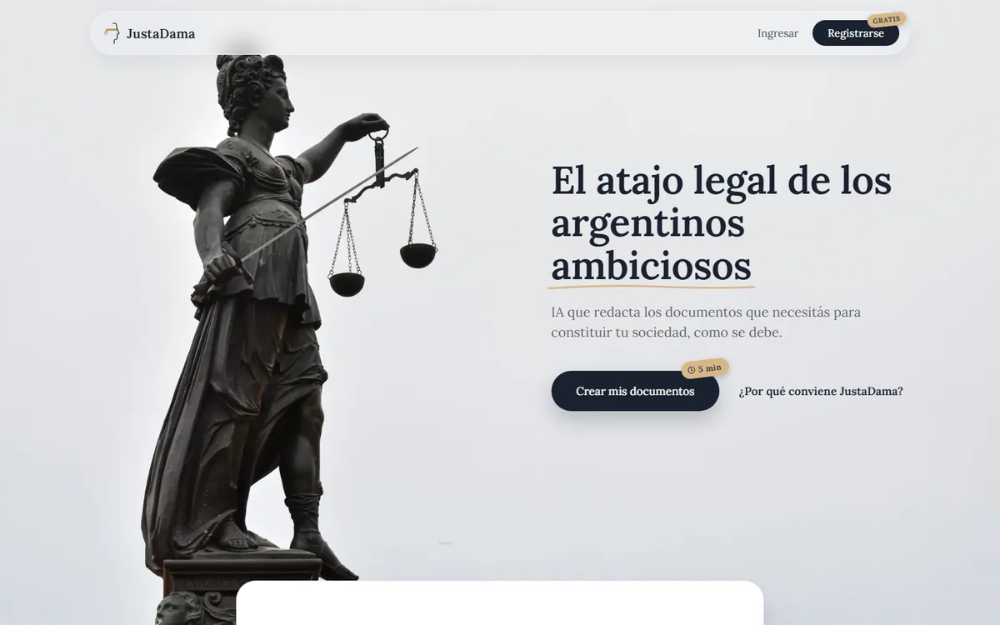

SincroResto
El sistema de gestión para restaurantes: pedidos, stock y caja en un mismo lugar, hecho a la medida de cómo trabaja un salón.
sincroresto.comHacemos software y automatizaciones a medida para pymes argentinas: lo que hoy se copia a mano, se carga solo.
Cada sistema se arma para cómo trabaja tu negocio. Estas son las cosas que más nos piden:
Sistemas que hicimos y que se usan todos los días.
El sistema de gestión para restaurantes: pedidos, stock y caja en un mismo lugar, hecho a la medida de cómo trabaja un salón.
sincroresto.com
Redacta con IA los documentos para constituir una sociedad en Argentina, listos para presentar.
justadama.com.arMuy pronto.
Sin vueltas, sin maquetas y sin pagar por cosas que no vas a usar.
Una llamada corta para entender qué te come el tiempo: la planilla que nadie actualiza, los pedidos que se pierden en el WhatsApp, las facturas en una caja.
Te mostramos el sistema andando con tus datos reales, no una presentación. Si algo no cierra, lo cambiamos antes de seguir.
Lo ponemos en marcha con tu equipo y lo vamos ajustando con lo que ves en el día a día. No te quedás solo con un sistema nuevo.
Contanos qué querés resolver y te respondemos con horarios para una llamada.
Depende de lo que haya que armar. Después de la llamada te pasamos un presupuesto por escrito, antes de empezar, y no pagás por funciones que no vas a usar.
Depende del sistema. En la llamada te decimos plazos concretos, y en el camino te vamos mostrando avances andando con tus datos.
No. Nos adaptamos a lo que ya usás: tu WhatsApp, tus planillas, tu mail o tu sistema de facturación. La idea es sacarte trabajo, no sumarte otro programa.
No. Lo armamos para que lo use cualquiera de tu equipo, y te acompañamos en la puesta en marcha.
Tus datos son tuyos y se usan solo para que el sistema funcione. Podés leer el detalle en la política de privacidad.
Sí. Las llamadas y la puesta en marcha se hacen a distancia, así que da igual dónde esté tu negocio.